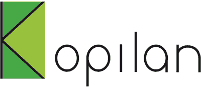

Declaración sobre proteccion de datos:
Los datos personales recabados a través de nuestra página web únicamente se utilizarán sin autorización expresa por su parte para la realización del contrato y la tramitación de sus solicitudes. La utilización de sus datos con fines publicitarios y para estudios de mercado, así como para la estructuración de los servicios electrónicos será procedente únicamente en los casos en los que usted haya dado su consentimiento con anterioridad.
La utilización de sus datos para publicidad personalizada solo se realizará previo consentimiento. No se realiza la cesión a terceros. Usted podrá revocar su consentimiento en cualquier momento y con efectos para el futuro.
Sólo cedemos a terceros aquellos datos (nombre y dirección) que son necesarios para garantizar la realización del encargo. Entre estos se encuentran las empresas de transporte responsables de la entrega de sus materiales de impresión. Kopilan se reserva el derecho de decidir la empresa de transporte que considere oportuna para cada envió.
|